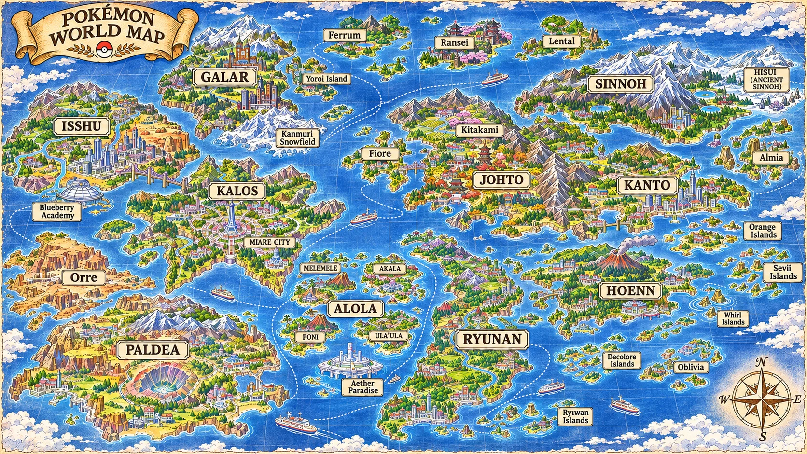
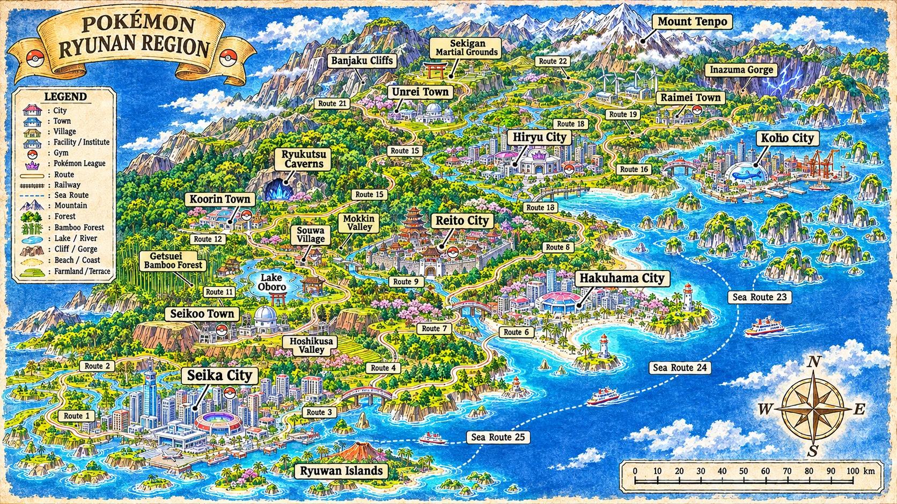

Bản đồ thế giới Pokémon
Vị trí tương quan giữa Ryunan và các vùng đất Pokémon khác.
Một vùng đất trải dài dọc bờ đại dương, nơi núi đá vôi, cao nguyên, rừng nguyên sinh, cố đô di sản và những quần đảo nhiệt đới cùng tạo nên một thế giới Pokémon đa dạng.
Từ Đỉnh Tenpo quanh năm mây phủ ở cực Bắc, qua cố đô Reito trầm mặc, đến siêu đô thị Seika và quần đảo Ryuwan ở phương Nam — mỗi hành trình đều mở ra một lát cắt riêng của Ryunan.

Ryunan nằm ở phía Nam của bản đồ thế giới Pokémon. Mở từng bản đồ để xem chi tiết địa hình, địa danh và mạng lưới giao thông.

Vị trí tương quan giữa Ryunan và các vùng đất Pokémon khác.
Bản đồ địa hình, thành phố, thị trấn, tuyến đường bộ và đường biển.
Núi cao hùng vĩ, thung lũng phủ sương và vùng châu thổ sông lớn.
Dải đất hẹp từ núi ra biển, có đầm phá, di sản cổ và những bãi cát dài.
Châu thổ màu mỡ, mạng lưới kênh rạch và các cụm đảo ngoài khơi.
Miền Bắc có bốn mùa; miền Trung nắng nóng và thường có bão cuối hè–thu; miền Nam ấm quanh năm với mùa mưa và mùa khô rõ rệt.
Khí hậu mát mẻ, nhiều nơi quanh năm phủ sương; địa hình gồm núi đá vôi, cao nguyên bazan và thung lũng.
Đường sắt cao tốc Bắc–Nam, phà và tàu khách từ cảng Koho đến quần đảo Ryuwan, cùng đường mòn xuyên rừng và đèo núi.
Từ đô thị hiện đại đến những vùng hoang dã lâu đời — mỗi địa điểm đều có cảnh quan và hệ sinh thái riêng.
Các tuyến đường bộ và đường biển kết nối đồng bằng, cao nguyên, rừng nguyên sinh, thành phố và những cụm đảo ven bờ. Chọn từng khu vực để xem lộ trình.
Tám chuyên gia phụ trách các lĩnh vực nghiên cứu khác nhau, từ sinh thái và địa chất đến di truyền, khảo cổ và y học Pokémon.
Nhấn vào ảnh để phóng to. Ảnh Giáo sư và cơ sở nghiên cứu được ghép theo đúng chuyên ngành.
Mỗi Hội quán có một phong cách chiến đấu và địa hình riêng. Thu thập đủ tám Huy hiệu để giành quyền tham dự Giải vô địch Liên đoàn Ryunan.
Trong trận đấu lấy Huy hiệu chính thức, bạn được tự do thu hồi và đổi Pokémon; Chủ hội quán phải giữ đội hình đăng ký ban đầu, trừ khi bị buộc phải đổi bởi chiêu thức. Mỗi bên được kích hoạt tối đa một cơ chế đặc biệt trong trận — Mega Evolution, Z-Moves hoặc Dynamax/Gigantamax tại Hội quán có Power Spot. Số lượng Pokémon và quyền sử dụng cơ chế đặc biệt của Chủ hội quán được điều chỉnh theo số Huy hiệu bạn đang có.
Những chuyên gia hàng đầu của Liên đoàn Ryunan. Người chiến thắng Giải vô địch Liên đoàn có quyền thách đấu cả bốn thành viên trước khi đối đầu Nhà Vô Địch.
Một chiến thuật gia điềm tĩnh, nổi bật với đội hình Pokémon mang sắc xanh lá và khả năng vận dụng linh hoạt nhiều chiến thuật.
Chân dung Nhà Vô Địch chưa có trong bộ ảnh được cung cấp.
Đội hình biểu tượng của Ryuzaki Kenjiro kết hợp sức mạnh, khả năng kiểm soát chiến trường và những lựa chọn chiến thuật linh hoạt.
Ryunan mở ra nhiều con đường trải nghiệm, không chỉ dành riêng cho các Nhà Huấn Luyện chiến đấu.
Giải đấu theo mùa tổ chức tại sân vận động trung tâm thành phố Hiryu. Người chiến thắng được quyền thách đấu Tứ Đại Thiên Vương và Nhà Vô Địch.
Các cuộc thi biểu diễn lớn được tổ chức tại thành phố biển Hakuhama, với sân khấu tại Nhà hát Biểu diễn Trung tâm.
Hoạt động thử thách diễn ra tại quần đảo Ryuwan vào mùa khô, gắn với thiên nhiên và văn hóa đảo.
Chương trình dành cho thanh thiếu niên trong vùng, tổ chức tại quần đảo Ryuwan.
Rừng Koorin có nhiều Pokémon hệ Cỏ, Côn Trùng và chim; Unrei nổi bật với Pokémon hệ Đá và Băng; vịnh Koho và Ryuwan có hệ sinh thái Nước; Seika tập trung các loài hệ Thép và Điện.
Năng lượng đặc thù của Ryunan cho phép sử dụng Mega Evolution, Z-Moves, Dynamax/Gigantamax và Terastal khi bạn có trang bị hợp lệ.
Đá Mega tại Hang Ryukutsu và di tích Reito; Tinh thể Z tại đền thờ Ryuwan; Power Spot tại sân vận động Seika và Đỉnh Tenpo; tinh thể Terastal trong hang đá vôi.
Một số nguyên tắc cơ bản giúp hành trình của bạn và Pokémon diễn ra an toàn, công bằng và tôn trọng thế giới tự nhiên.
Pokémon có cảm xúc và ý chí riêng. Tiến hóa là quyết định của Pokémon; bạn có thể hỗ trợ bằng vật phẩm hoặc điều kiện phù hợp, nhưng Pokémon có thể từ chối hoặc trì hoãn.
Poké Ball không bảo đảm thu phục tuyệt đối. Pokémon hoang dã có thể kháng cự, thoát ra hoặc từ chối. Không sử dụng Poké Ball lên con người và luôn tuân thủ quy định bảo tồn.
Bạn có thể mang theo tối đa sáu Pokémon trong đội hình đang hoạt động. Pokémon bắt thêm được chuyển đến cơ sở lưu trữ/phòng thí nghiệm đã đăng ký; có thể đổi đội hình tại Trung tâm Pokémon.
Mỗi Pokémon sử dụng tối đa bốn chiêu thức. Khi học chiêu thức mới, Pokémon cần thay thế một chiêu thức cũ.
Trung tâm Pokémon cung cấp chẩn đoán, điều trị, phục hồi thể lực, chăm sóc khẩn cấp, lưu trú, liên lạc và chuyển Pokémon qua mạng PC.
Các khu vực nguy hiểm hoặc hạn chế như miệng núi lửa, hang cổ, lõi rừng nguyên sinh và vùng biển sâu có thể yêu cầu giấy phép cùng Pokémon đủ khả năng di chuyển tại địa hình đó.
Nhà Huấn Luyện · Điều phối viên · Người chăm sóc Pokémon · Nhà Nghiên cứu · Nhà khảo cổ · Kiểm lâm · Bác sĩ Pokémon · Đặc vụ · Thương nhân · Nghệ nhân chế tác và nhiều công việc khác.